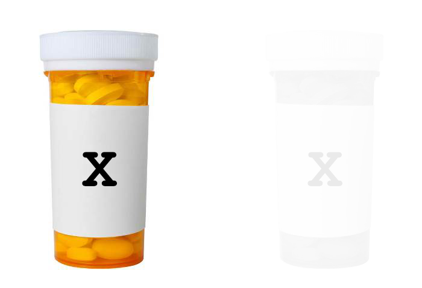
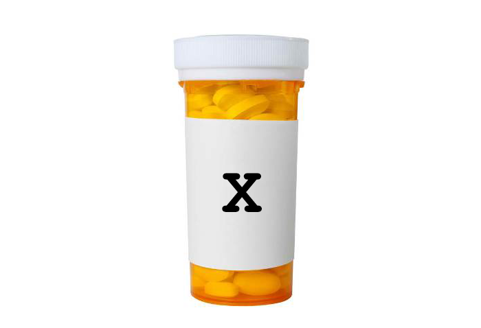

<!DOCTYPE html>
<html>
  <head>
    <title>IC118</title>
  	<script src="./js/jquery.min.js"></script>
    <script src="./js/jspsych.js"></script>
    <script src="./js/plugins/jspsych-instructions.js"></script>
    <script src="./js/plugins/jspsych-html-button-response.js"></script>
    <script src="./js/plugins/jspsych-categorize-cuechoice.js"></script>
    <script src="./js/plugins/jspsych-survey-multi-choice.js"></script>
    <script src="./js/plugins/jspsych-survey-text.js"></script>
    <script src="./js/plugins/jspsych-html-slider-response.js"></script>
    <script src="./js/welcome.js"></script>
    <link href="js/css/jspsych.css" rel="stylesheet" type="text/css"></link>
  </head>

  <body>
    <div id="welcome"></div>
  </body>

  <script>
  //groups / conditions
  //instruction groups
  var instruction_conditions = ["1","2","3"];
  let instruction_condition = jsPsych.randomization.sampleWithoutReplacement(instruction_conditions, 1);
  //outcome density groups
  var OD_conditions = ["1","2"];
  let OD_condition = jsPsych.randomization.sampleWithoutReplacement(OD_conditions, 1);

// experiment parameters
var instr_ITI = 1000;

//keycode for f = 70, h = 72//
var Treatment_keyanswer = 70;
var NoTreatment_keyanswer = 72;

  /**preload the images**/
      var images = [
        "img/cue.png",
        "img/nocue.png",
        "img/cue_choice.png"
      ];
      jsPsych.pluginAPI.preloadImages(images);

//--------------------------------------------------------------------------------
	/* initialise timeline*/

	var timeline = [];
	var introloop = [];
  var chooseloop = [];
	var turkcode = (Math.floor(Math.random() * 899990) + 100007).toString();

  //--------------------------------------------------------------------------------
  	/* function to start the jsPsych experiment */

  	function startExperiment() {

  	// add properties to each trial in the jsPsych data
  	jsPsych.data.addProperties({
  	  	turkcode: turkcode,
  	  	instruction_condition: instruction_condition,
        OD_condition: OD_condition,
  	});

    jsPsych.init({
  	  	timeline: timeline,
  	  	preload_images: images,
  	  	show_progress_bar: false,
  	  	on_finish: function() {
  	  		//endExperiment( jsPsych.data.get().csv() + jsPsych.data.getInteractionData().csv(),
  	  		endExperiment( jsPsych.data.get().csv(),
  	  			function() {
  	  				document.write('<div id="endscreen" class="endscreen" style="width:1000px"><div class="endscreen" style="text-align:center; border:0px solid; padding:10px; font-size:120%; width:800px; float:right"><p><br><br><br>All done!<br><br>Your completion code is <span id="turkcode" style="font-weight:bold;font-size:130%">' + turkcode + '</span>. To receive payment for the HIT, return to the Amazon Mechanical Turk page and enter this code. Please contact us if something goes wrong and we\'ll fix it as quickly as possible.</p></div></div>')
  	  			})
  	  		}
  	  	});
  	}

    /* save and finish */
  	function endExperiment(dataset,callback) {
  	  	// jsPsych.data.displayData() // useful for debugging
  	  	$.post('submit',{"content": dataset}); // uncomment to save data
  	  setTimeout(callback,1000)
  	}

//--------------------------------------------------------------------------------
	/* instructions text */

  var ins = {};
  if (instruction_condition == "1"){

  ins.text1 = [
    `In this experiment, you are asked to imagine that you are a doctor and medical researcher studying a new illness caused by a virus in the human body.</p>`
  ];
  ins.text2 = [
    `<p>An experimental drug, <i>Cloveritol</i>, has been developed in the hopes of treating the disease effectively. Laboratory results of Cloveritol have been promising but the drug\'s efficacy and side effects have not yet been tested on patients.</p>`
  ];

  ins.text3 = [
    `<p>Your job is to assess the new drug while you treat patients with the disease.</p>`+
    `<p>Imagine you have 40 patients in your care in this study. You must first decide how many patients to administer Cloveritol and how many to administer no treatment.</p>`+
    `<p>You will be asked to do this using a sliding scale ranging from 0 to 40.</p>`
  ];
  ins.text4 = [
      `<p>You will then observe how many of the patients in your study recovered by the end of the observation period, and how many were still sick.</p>`
  ];
  ins.text5 = [
    `<p>Please note that only the presented information can help you. Your own personal knowledge or experience with drugs of similar names will <strong>NOT</strong> help you in this task.</p>`+
    `<p>Please DO NOT write down anything as you are going through the experiment. If you do so, it may affect the results. It will also slow you down!</p>`
  ];
  ins.text6 = [
    `<p>After observing the results from these 40 patients, you will be asked to judge how effective Cloveritol is for treating this particular illness.</p>`+
    `<p>Try to use only the knowledge you have learned from the experiment to make your decisions.</p>`
  ];
  ins.text7 = [
    `Press Next to begin the experiment.`
  ];

} else if (instruction_condition == "2"){

  ins.text1 = [
    `In this experiment, you are asked to imagine that you are a doctor and medical researcher studying a new illness caused by a virus in the human body.</p>`
  ];
  ins.text2 = [
    `<p>An experimental drug, <i>Cloveritol</i>, has been developed that is hoped will treat the disease effectively. Laboratory results of Cloveritol have been promising but the drug\'s efficacy and side effects have not yet been tested on patients.</p>`+
    `<p>New drugs are normally tested using a <i>clinical trial</i>. Clinical trials typically involve giving the drug to some patients but giving other patients no treatment.</p>`+
    `<p>If the chances of recovery are higher for the patients that were given the drug, it suggests that the drug has some effect on recovery.</p>`+
    `<p>If the chances of recovery are the same for patients given the drug and patients given no treatment, it suggests that the drug has no effect on recovery.</p>`
  ];
  ins.text3 = [
    `<p>Your job is to assess the new drug while you treat patients with the disease.</p>`+
    `<p>Imagine you have 40 patients in your care in this study. You must first decide how many patients to administer Cloveritol and how many to administer no treatment.</p>`+
    `<p>You will be asked to do this using a sliding scale ranging from 0 to 40.</p>`
  ];
  ins.text4 = [
      `<p>You will then observe how many of the patients in your study recovered by the end of the observation period, and how many were still sick.</p>`
  ];
  ins.text5 = [
    `<p>Please note that only the presented information can help you. Your own personal knowledge or experience with drugs of similar names will <strong>NOT</strong> help you in this task.</p>`+
    `<p>Please DO NOT write down anything as you are going through the experiment. If you do so, it may affect the results. It will also slow you down!</p>`
  ];
  ins.text6 = [
    `<p>After observing the results from these 40 patients, you will be asked to judge how effective Cloveritol is for treating this particular illness.</p>`+
    `<p>Try to use only the knowledge you have learned from the experiment to make your decisions.</p>`
  ];
  ins.text7 = [
    `Press Next to begin the experiment.`
  ];

} else if (instruction_condition == "3"){

  ins.text1 = [
    `In this experiment, you are asked to imagine that you are a doctor and medical researcher studying a new illness caused by a virus in the human body.</p>`
  ];
  ins.text2 = [
    `<p>An experimental drug, <i>Cloveritol</i>, has been developed that is hoped will treat the disease effectively. Laboratory results of Cloveritol have been promising but the drug\'s efficacy and side effects have not yet been tested on patients.</p>`+
    `<p>New drugs are normally tested using a <i>clinical trial</i>. Clinical trials typically involve giving the drug to some patients but giving other patients no treatment.</p>`+
    `<p>Why do you think it is important for some patients not to be given the treatment? How could this help researchers understand how effective the treatment is?</p>`
  ];
  ins.text3 = [
    `<p>It is important for some patients to not receive the treatment because people often recover from illness without any treatment. For example, consider the flu; the vast majority of people will recover from the flu without treatment.</p>`+
    `<p>Thus, to understand how effective a treatment is, researchers have to compare the chances of recovery for patients who took the treatment to the chances of recovery for patients who did not take it.</p>`+
    `<p>If the chances of recovery are higher for the patients that were given the drug, it suggests that the drug has some effect on recovery.</p>`+
    `<p>If the chances of recovery are the same for patients given the drug and patients given no treatment, it suggests that the drug has no effect on recovery.</p>`
  ];
  ins.text4 = [
    `<p>Recently, there was a lot of excitement about a research study suggesting that a new formulation of B12 vitamins, B12tac, could help people who suffer from migraine headaches. Here is a description of the research:</p>`+
    `<p>“200 people who suffer from migraine headaches were given B12tac for one week. 87% of the people reported their symptoms were reduced by the end of the week, and that they then felt more productive at work, and more relaxed at home. The researchers concluded that B12tac is an effective drug to treat migraine headaches.”</p>`+
    `<p>Do the researchers have good evidence for the conclusion that B12tac effectively treats migraines?</p>`
  ];
  ins.addtext4 = [
    `<p><b>Even though 87% recovery rate sounds very high, the researchers do not know what percentage of people would have recovered without the drug. Therefore we might conclude NO, they did not have good evidence. </b></p>`
  ]
  ins.text5 = [
    `<p>A competing drug company was also developing a treatment based on B vitamins, called BetaTX for migraine headaches. Their research is described below:</p>`+
    `<p>\"200 people who suffer from migraine headaches were given BetaTX for one week, and an additional 200 people who suffer from migraine headaches were not given the experimental drug. 79% of the people who took the drug reported their symptoms were reduced by the end of the week, while only 45% of the people who did not take the drug reported their symptoms were reduced by the end of the week. The researchers concluded that BetaTXis an effective drug to treat migraine headaches.\"</p>`+
    `<p>Do the researchers have good evidence for the conclusion that BetaTX effectively treats migraines?</p>`
  ];
  ins.addtext5 = [
    `<p><b>A higher rate of recovery was observed in those people who took the drug than those who did not. Therefore we might conclude YES, they have good evidence. </b></p>`
  ]
  ins.text6 = [
    `<p>Based on the earlier success of BetaTX for migraine headaches, the same drug company wanted to see if it would also reduce chronic back pain.</p>`+
    `<p>“200 people who suffer from chronic back pain were given BetaTX for one week, and an additional 200 people who suffer from chronic back pain were not given the experimental drug. 64% of the people who took the drug reported their symptoms were reduced by the end of the week, and 66% of the people who did not take the drug reported their symptoms were reduced by the end of the week.”</p>`+
    `<p>Do the researchers have good evidence for the conclusion that BetaTX effectively treats chronic back pain?</p>`
  ];
  ins.addtext6 = [
    `<p><b>Although a majority of people who took the drug improved, the same was true for the people who did not take the drug. Therefore we might conclude NO, they did not have good evidence. </b></p>`
  ]
  ins.text7 = [
    `<p>Now let's return to the medical scenario that you are about to complete.</p>`+
    `<p>Your job is to assess the new drug while you treat patients with the disease.</p>`+
    `<p>Imagine you have 40 patients in your care in this study. You must first decide how many patients to administer Cloveritol and how many to administer no treatment.</p>`+
    `<p>You will be asked to do this using a sliding scale ranging from 0 to 40.</p>`
  ];
  ins.text8 = [
      `<p>You will then observe how many of the patients in your study recovered by the end of the observation period, and how many were still sick.</p>`
  ];
  ins.text9 = [
    `<p>Please note that only the presented information can help you. Your own personal knowledge or experience with drugs of similar names will <strong>NOT</strong> help you in this task.</p>`+
    `<p>Please DO NOT write down anything as you are going through the experiment. If you do so, it may affect the results. It will also slow you down!</p>`
  ];
  ins.text10 = [
    `<p>After observing the results from these 40 patients, you will be asked to judge how effective Cloveritol is for treating this particular illness.</p>`+
    `<p>Try to use only the knowledge you have learned from the experiment to make your decisions.</p>`
  ];
  ins.text11 = [
    `Press Next to begin the experiment.`
  ];
  ins.causalratingtext = [` `];
}

//--------------------------------------------------------------------------------
var countsData = [];
// define stuff for text-based summaries
if (OD_condition == "1") {
  // low OD
   countsData.nTrt = [0,1,2,3,4,5,6,7,8,9,10,11,12,13,14,15,16,17,18,19,20,21,22,23,24,25,26,27,28,29,30,31,32,33,34,35,36,37,38,39,40];
   countsData.nNoTrt = [40,39,38,37,36,35,34,33,32,31,30,29,28,27,26,25,24,23,22,21,20,19,18,17,16,15,14,13,12,11,10,9,8,7,6,5,4,3,2,1,0];
   countsData.nTrt_Opres = [0,0,0,1,1,1,1,1,2,2,2,2,2,3,3,3,3,3,4,4,4,4,4,5,5,5,5,5,6,6,6,6,6,7,7,7,7,7,8,8,8];
   countsData.nTrt_Oabs = [0,1,2,2,3,4,5,6,6,7,8,9,10,10,11,12,13,14,14,15,16,17,18,18,19,20,21,22,22,23,24,25,26,26,27,28,29,30,30,31,32];
   countsData.nNoTrt_Opres = [8,8,8,7,7,7,7,7,6,6,6,6,6,5,5,5,5,5,4,4,4,4,4,3,3,3,3,3,2,2,2,2,2,1,1,1,1,1,0,0,0];
   countsData.nNoTrt_Oabs = [32,31,30,30,29,28,27,26,26,25,24,23,22,22,21,20,19,18,18,17,16,15,14,14,13,12,11,10,10,9,8,7,6,6,5,4,3,2,2,1,0];
}else if (OD_condition == "2"){
  //high OD
   countsData.nTrt = [0,1,2,3,4,5,6,7,8,9,10,11,12,13,14,15,16,17,18,19,20,21,22,23,24,25,26,27,28,29,30,31,32,33,34,35,36,37,38,39,40];
   countsData.nNoTrt = [40,39,38,37,36,35,34,33,32,31,30,29,28,27,26,25,24,23,22,21,20,19,18,17,16,15,14,13,12,11,10,9,8,7,6,5,4,3,2,1,0];
   countsData.nTrt_Opres = [0,1,2,2,3,4,5,6,6,7,8,9,10,10,11,12,13,14,14,15,16,17,18,18,19,20,21,22,22,23,24,25,26,26,27,28,29,30,30,31,32];
   countsData.nTrt_Oabs = [0,0,0,1,1,1,1,1,2,2,2,2,2,3,3,3,3,3,4,4,4,4,4,5,5,5,5,5,6,6,6,6,6,7,7,7,7,7,8,8,8];
   countsData.nNoTrt_Opres = [32,31,30,30,29,28,27,26,26,25,24,23,22,22,21,20,19,18,18,17,16,15,14,14,13,12,11,10,10,9,8,7,6,6,5,4,3,2,2,1,0];
   countsData.nNoTrt_Oabs = [8,8,8,7,7,7,7,7,6,6,6,6,6,5,5,5,5,5,4,4,4,4,4,3,3,3,3,3,2,2,2,2,2,1,1,1,1,1,0,0,0];
}

// var nT = 0;
// var this_nTrt = nTrt[nT];
// var this_nNoTrt = nNoTrt[nT];
// var this_nTrt_Opres = nTrt_Opres[nT];
// var this_nTrt_Oabs = nTrt_Oabs[nT];
// var this_nNoTrt_Opres = nNoTrt_Opres[nT];
// var this_nNoTrt_Oabs = nNoTrt_Oabs[nT];

//--------------------------------------------------------------------------------
// define trial types and randomise trial list
// var TreatChoice_OAbsent = {
//   type: "categorize-cuechoice",
//   stimulus_choice: `<div id="img"></div>`+`<div class="large_text">Cloveritol or No Treatment?</div>`,
//   stimulus1: `<div id="img"></div>`+`<div class="large_text">Cloveritol</div>`,
//   stimulus2: `<div id="img"></div>`+`<div class="large_text">No Treatment</div>`,
//
//   cue_choice_options: `<div class="cue_choice_text"><p>To administer <strong>Cloveritol</strong>, press the F key</p></div>`+ `<div class="cue_choice_text"><p>To administer <strong>no treatment</strong>, press the H key</p></div>`,
//   cue_choices: [Treatment_keyanswer, NoTreatment_keyanswer],
//   // choice_options: `<div class="choice_text"><p><strong>Patient did not recover</strong></p><p>(Press Z key)</p></div>`+ `<div class="choice_text2"><p><strong>Patient recovered</strong></p><p>(Press M key)</p></div>`,
//   // choices: [OAbsent_keyanswer, OPresent_keyanswer],
//   cue_answer: Treatment_keyanswer,
//   // key_answer: OPresent_keyanswer,
//   text_answer: "Patient has not recovered",
//   prompt: `<div class="prompt_text"><p>Rate the chances that this patient will recover.</p></div>`,
//   data: {
//     phase: 'training expectancy',
//     cue_type: 1,
//     outcome: 0
//   }
// };
//
// var TreatChoice_OPresent = {
//   type: "categorize-cuechoice",
//   stimulus_choice: `<div id="img"></div>`+`<div class="large_text">Cloveritol or No Treatment?</div>`,
//   stimulus1: `<div id="img"></div>`+`<div class="large_text">Cloveritol</div>`,
//   stimulus2: `<div id="img"></div>`+`<div class="large_text">No Treatment</div>`,
//
//   cue_choice_options: `<div class="cue_choice_text"><p>To administer <strong>Cloveritol</strong>, press the F key</p></div>`+ `<div class="cue_choice_text"><p>To administer <strong>no treatment</strong>, press the H key</p></div>`,
//   cue_choices: [Treatment_keyanswer, NoTreatment_keyanswer],
//   // choice_options: `<div class="choice_text"><p><strong>No improvement</strong></p><p>(Press Z key)</p></div>`+ `<div class="choice_text2"><p><strong>Patient recovered</strong></p><p>(Press M key)</p></div>`,
//   // choices: [OAbsent_keyanswer, OPresent_keyanswer],
//   cue_answer: Treatment_keyanswer,
//   // key_answer: OPresent_keyanswer,
//   text_answer: "Patient has recovered",
//   prompt: `<div class="prompt_text"><p>Rate the chances that this patient will recover.</p></div>`,
//   data: {
//     phase: 'training expectancy',
//     cue_type: 1,
//     outcome: 1
//   }
// };
// // randomisation of trials//
// var trial_type = [TreatChoice_OAbsent,TreatChoice_OPresent]; //i realise this doesn't make sense because there is no low and high it's just o or no o//
// var blk;
// var nBlocks_training = 4; //Should be 4 (for 40 trials)
// // set up base block according to condition
// if (OD_condition == "1") {
//   // low OD
//   var single_blk_training = [TreatChoice_OAbsent, TreatChoice_OAbsent, TreatChoice_OAbsent,TreatChoice_OAbsent, TreatChoice_OPresent, TreatChoice_OAbsent, TreatChoice_OAbsent, TreatChoice_OAbsent, TreatChoice_OAbsent,TreatChoice_OPresent];
// }else if (OD_condition == "2"){
//   //high OD
//   var single_blk_training = [TreatChoice_OAbsent, TreatChoice_OPresent, TreatChoice_OPresent, TreatChoice_OPresent, TreatChoice_OPresent, TreatChoice_OAbsent, TreatChoice_OPresent, TreatChoice_OPresent, TreatChoice_OPresent, TreatChoice_OPresent];
// }
//
// //shuffle cues//
// var randBlocks_training= [];
// for (blk = 0; blk < nBlocks_training;
//   blk++) {
//
//     var randBlk_training_shuffle = jsPsych.randomization.repeat(single_blk_training,1);
//
//     // randBlk_training_shuffle = jsPsych.randomization.shuffleNoRepeats(randBlk_training); //DOESN'T WORK???
//     randBlocks_training = randBlocks_training.concat(randBlk_training_shuffle);
// }
//--------------------------------------------------------------------------------
	/* introloop:
	- includes instructions, sampling manipulation, instruction check, and splash screen
	- loops continuously until participant gets questions correct */

	// instructions
  if (instruction_condition == "3"){
    // instructions either side of responses to three questions
    var instructions_display1 = {
  		type: 'instructions',
  		pages: [
  			ins.text1,
  			ins.text2,
  			ins.text3
  			],
  		allow_keys: false,
  		show_clickable_nav: true,
  		post_trial_gap: instr_ITI
  	};
  	introloop.push(instructions_display1);

    // 3 open ended questions
    instructionQs = [];
    // Question 1
    instructionQs.question1a = {
      type: 'survey-multi-choice',
      questions: [
      {prompt: [ins.text4 + `<br>` + `<br>`+ `<br>` ],
      options: ['Yes', 'No'],
      required: true, horizontal: false}
      ],
      button_label: 'Continue',
      data: {phase: 'instructionQ1'}
    };
    instructionQs.question1b = {
      type: 'survey-multi-choice',
      questions: [
      {prompt: [ins.text4 + `<br>` + `<br>` + ins.addtext4],
      options: [],
      required: false, horizontal: false}
      ],
      button_label: 'Continue',
      data: {phase: 'instructionQ1'}
    };
    introloop.push(instructionQs.question1a);
    introloop.push(instructionQs.question1b);

    // Question 2
    instructionQs.question2a = {
      type: 'survey-multi-choice',
      questions: [
      {prompt: [ins.text5 + `<br>` + `<br>`+ `<br>` ],
      options: ['Yes', 'No'],
      required: true, horizontal: false}
      ],
      button_label: 'Continue',
      data: {phase: 'instructionQ1'}
    };
    instructionQs.question2b = {
      type: 'survey-multi-choice',
      questions: [
      {prompt: [ins.text5 + `<br>` + `<br>` + ins.addtext5],
      options: [],
      required: false, horizontal: false}
      ],
      button_label: 'Continue',
      data: {phase: 'instructionQ1'}
    };
    introloop.push(instructionQs.question2a);
    introloop.push(instructionQs.question2b);

    // Question 3
    instructionQs.question3a = {
      type: 'survey-multi-choice',
      questions: [
      {prompt: [ins.text6 + `<br>` + `<br>`+ `<br>` ],
      options: ['Yes', 'No'],
      required: true, horizontal: false}
      ],
      button_label: 'Continue',
      data: {phase: 'instructionQ1'}
    };
    instructionQs.question3b = {
      type: 'survey-multi-choice',
      questions: [
      {prompt: [ins.text6 + `<br>` + `<br>` + ins.addtext6],
      options: [],
      required: false, horizontal: false}
      ],
      button_label: 'Continue',
      data: {phase: 'instructionQ1'}
    };
    introloop.push(instructionQs.question3a);
    introloop.push(instructionQs.question3b);

    // instructions intermixed with responses to three questions
    var instructions_display2 = {
      type: 'instructions',
      pages: [
        ins.text7,
        ins.text8,
        ins.text9,
        ins.text10,
        ins.text11
        ],
      allow_keys: false,
      show_clickable_nav: true,
      post_trial_gap: instr_ITI
    };
    introloop.push(instructions_display2);

  }else {
  	var instructions_display = {
  		type: 'instructions',
  		pages: [
  			ins.text1,
  			ins.text2,
  			ins.text3,
  			ins.text4,
        ins.text5,
  			ins.text6,
        ins.text7
  			],
  		allow_keys: false,
  		show_clickable_nav: true,
  		post_trial_gap: instr_ITI
  	};
  	introloop.push(instructions_display);
  }

	// instruction check
	var Q0_text = "<b>Question 1:</b> The aim of this task is to learn about the efficacy of a new drug Cloveritol, while you see a series of 40 patients.";
	var Q0_answers = ["TRUE", "FALSE"];
  if (instruction_condition == "1"){
	   var Q1_text = "<b>Question 2:</b> The efficacy of the drug has not been tested in patients.";
  } else if (instruction_condition == "2"){
     var Q1_text = "<b>Question 2:</b> The efficacy of the drug has not been tested in patients. Drugs are normally tested using a clinical trial in which the chances of recovery when the drug is administered are compared to the chances of recovery when the drug is not administered.";
   } else if (instruction_condition == "3"){
      var Q1_text = "<b>Question 2:</b> The efficacy of the drug has not been tested in patients. Drugs are normally tested using a clinical trial in which the chances of recovery when the drug is administered are compared to the chances of recovery when the drug is not administered.";
  }
  var Q1_answers = ["TRUE", "FALSE"];
  var Q2_text = "<b>Question 3:</b> Your task is to 1) choose how many patients to administer the new drug Cloveritol and how many to administer no treatment, then 2) observe how many patients recovered.";
	var Q2_answers = ["TRUE", "FALSE"];
  var Q3_text = "<b>Question 4:</b> Should I write down things as I go through this task? ";
	var Q3_answers = ["Yes, sure it is fine to write things down.", "No, please DO NOT write down anything. It will affect the results and will slow you down."];
	var correctstring = '{"Q0":"' + Q0_answers[0] + '","Q1":"' + Q1_answers[0] + '","Q2":"' + Q2_answers[0] + '","Q3":"' + Q3_answers[1] + '"}';

	// define instruction check block
	var instructioncorrect = false;
	var instruction_check = {
		type: "survey-multi-choice",
		preamble: ["<p align='center'><b>Check your knowledge before you begin!</b></p>"],
		questions: [{prompt: Q0_text, options: Q0_answers, required: true,},
					{prompt: Q1_text, options: Q1_answers, required: true},
					{prompt: Q2_text, options: Q2_answers, required: true},
					{prompt: Q3_text, options: Q3_answers, required: true},],
		on_finish: function(data) {
			if( data.responses == correctstring) {
				action = false;
				instructioncorrect = true;
			}
		}
	}
	introloop.push(instruction_check)

	// define a page for the incorrect response
	var showsplash = true;
	var splash_screen = {
		type: 'html-button-response',
		choices: ['Click here to read the instructions again'],
		stimulus: '<center>Unfortunately, at least one of your answers was incorrect.</center>'
	}

	// push it to a conditional node that only shows it if the response was wrong
	var conditional_splash = {
		timeline: [splash_screen],
		conditional_function: function(data) {
	        return !instructioncorrect // skip if correct
	    }
	}
	introloop.push(conditional_splash)

	// finally, add the entirety of this introductory section to a loop node
	var loop_node = {
		timeline: introloop,
		loop_function: function(data) {
	        //var action = true;
	        return !instructioncorrect // stop looping if correct
	    }
	}
	timeline.push(loop_node) // ... and add that to the timeline

	// success trial
	var successtrial = {
		type: 'html-button-response',
		post_trial_gap: 0,
		choices: ['Click here to begin the experiment'],
		stimulus: '<center>Well done!</center>'
	};
	timeline.push(successtrial);

  //--------------------------------------------------------------------------------
	/* define stage 1 training block */

	// training stage 1
  // var training_block = {
  //   type: "categorize-cuechoice",
  //   correct_text: `<p><center>Outcome:</center></p>`+`<div class="OPresent_text"><p>%ANS%</p></div>`,
  //   incorrect_text: `<p><center>Outcome:</center></p>`+`<div class="OAbsent_text"><p>%ANS%</p></div>`,
  //   show_stim_with_feedback: true,
  //   data: {phase: "training_expectancy"},
  //   timeline: randBlocks_training
  // }
  // timeline.push(training_block);

  //--------------------------------------------------------------------------------
  var choose_treatment = {
    type: 'html-slider-response',
    stimulus: [
      `<div id="img"></div>`
    ],
    labels: [`0`,`2`,`4`,`6`,`8`,`10`,
      `12`,`14`,`16`,`18`,`20`,
      `22`,`24`,`26`,`28`,`30`,
      `32`,`34`,`36`,`38`,`40`,
    ],
    // labels: [`0`,`1`,`2`,`3`,`4`,`5`,`6`,`7`,`8`,`9`,`10`,
    //   `11`,`12`,`13`,`14`,`15`,`16`,`17`,`18`,`19`,`20`,
    //   `21`,`22`,`23`,`24`,`25`,`26`,`27`,`28`,`29`,`30`,
    //   `31`,`32`,`33`,`34`,`35`,`36`,`37`,`38`,`39`,`40`,
    // ],
    min: 0,
    max: 40,
    start: 0,
    step: 1,
    prompt: `<div class="large_text2" style="text-align: center";>Cloveritol vs No Treatment</div>`+`<div class="prompt_text2"><p>Please indicate how many of your 40 patients you would like to administer Cloveritol.</p></div>`+
    `<div class="prompt_text3"><p>Note that the remaining patients will receive no treatment.</p></div>`,
    data: {phase: "N patients"},
	}
  timeline.push(choose_treatment);
  // console.log(ins.causalratingtext);
  //--------------------------------------------------------------------------------
	/* define test 1  */

  // present instructions
  var test_instructions_1 = {
    type: 'instructions',
    data: {countsData: countsData},
    pages: function(data){
      var nT = jsPsych.data.get().last(1).values()[0].response;
      var this_nTrt = countsData.nTrt[nT];
      var this_nNoTrt = countsData.nNoTrt[nT];
      var this_nTrt_Opres = countsData.nTrt_Opres[nT];
      var this_nTrt_Oabs = countsData.nTrt_Oabs[nT];
      var this_nNoTrt_Opres = countsData.nNoTrt_Opres[nT];
      var this_nNoTrt_Oabs = countsData.nNoTrt_Oabs[nT];
      var causalratingtext = [`<p>Imagine that the observation period has now finished and you receive the results of the 40 patients.</p>` +
        `<p>Of the ` + this_nTrt + ` patients to whom you administered Cloveritol, ` + this_nTrt_Opres + ` have recovered, while ` + this_nTrt_Oabs + ` have not recovered.</p>`+
        `<p>Of the ` + this_nNoTrt + ` patients to whom you gave no treatment, ` + this_nNoTrt_Opres + ` have recovered, while ` + this_nNoTrt_Oabs + ` have not recovered.</p>`
        ];
        return causalratingtext
      },
    show_clickable_nav: true
  }
  timeline.push(test_instructions_1);

  // present instructions
  var test_instructions_2 = {
    type: 'instructions',
    data: {countsData: countsData},
    pages: [`<p>We are now going to ask you to make a final judgement about the treatment you have observed.`],
    show_clickable_nav: true
  }
  timeline.push(test_instructions_2);

	// // present instructions
  // var test_instructions = {
  //   type: 'instructions',
  //   pages: [
  //     `We are now going to ask you to make a final judgement about the treatment you have observed.`
  //   ],
  //   show_clickable_nav: true
  // }
  // timeline.push(test_instructions);

  // // finally, add the entirety of this introductory section to a loop node
  // var choice_node = {
  //   timeline: chooseloop,
  //   loop_function: function(data) {
  //         //var action = true;
  //         return !instructioncorrect // stop looping if correct
  //     }
  // }
  // timeline.push(choice_node) // ... and add that to the timeline

  // // push it to a conditional node that only shows it if the response was wrong
	// var choice_node = {
	// 	timeline: [chooseloop],
	// 	conditional_function: function(data) {
	//         return !instructioncorrect // skip if correct
	//     }
	// }
	// timeline.push(choice_node)


  var efficacy_rating = {
    type: 'html-slider-response',
    stimulus: [
      `<div id="img"></div>`
    ],
    labels: [`-100<br>Effectively worsens disease`,
      `0<br>Completely ineffective`,
      `100<br>Effectively treats disease`,
    ],
    min: -100,
    max: 100,
    start: 0,
    step: 1,
    prompt: `<div class="large_text2" style="text-align: center";>Cloveritol vs No Treatment</div>`+`<div class="prompt_text2"><p>On a scale of -100 to 100, rate how effective you think the treatment was compared to having no treatment at all.</p></div>`+
    `<div class="prompt_text3"><p>NOTE: intermediate negative values indicate the drug actually made the disease worse, whereas intermediate positive values indicate the drug was effective in treating the disease.</p></div>`,
    data: {phase: "efficacy rating"}
  };
  timeline.push(efficacy_rating);

//--------------------------------
// post-exp q'aire stuff

var questionnaire = {};

// written info question
questionnaire.didYouWriteCheck = {
  type: 'survey-multi-choice',
  questions: [
  {prompt: 'Did you write down any information while completing this task? Please be honest, it will not affect your eligibility to be paid.',
  options: ['Yes', 'No'],
  required: true, horizontal: false}
  ],
  button_label: 'Continue',
  data: {phase: 'didYouWriteCheckQ'}
};
timeline.push(questionnaire.didYouWriteCheck);

// simple memory question 1
questionnaire.pickDrug = {
  type: 'survey-multi-choice',
  questions: [
  {prompt: 'Which of the following was the name of the drug that you were learning about in this task?',
  options: ['Cloveritol', 'Placydil', 'Respiraclast', 'Zodiclear'],
  required: true, horizontal: false}
  ],
  button_label: 'Continue',
  data: {phase: 'simpleMemoryQ1'}
};
timeline.push(questionnaire.pickDrug);

  // free-response pilot question
  questionnaire.open = {
    type: 'survey-text',
    questions: [
    {prompt: 'Do you have any other comments about the experiment? Did anything seem to go wrong or confuse you?',
    rows: 8,
    columns: 80}
    ],
    preamble: '<font size="-1">You may leave this blank if you wish. </font>',
    data: {phase: 'freeResponseQ'}
  };
  timeline.push(questionnaire.open);

  //--------------------------------------------------------------------------------
	/* start by running the "welcome.js" script */
	welcome.run();

  </script>
</html>
